서울대학교 컴퓨터공학부 유승주 교수님의 "고급 컴퓨터 구조" 강의를 필기한 내용입니다.
SIMD
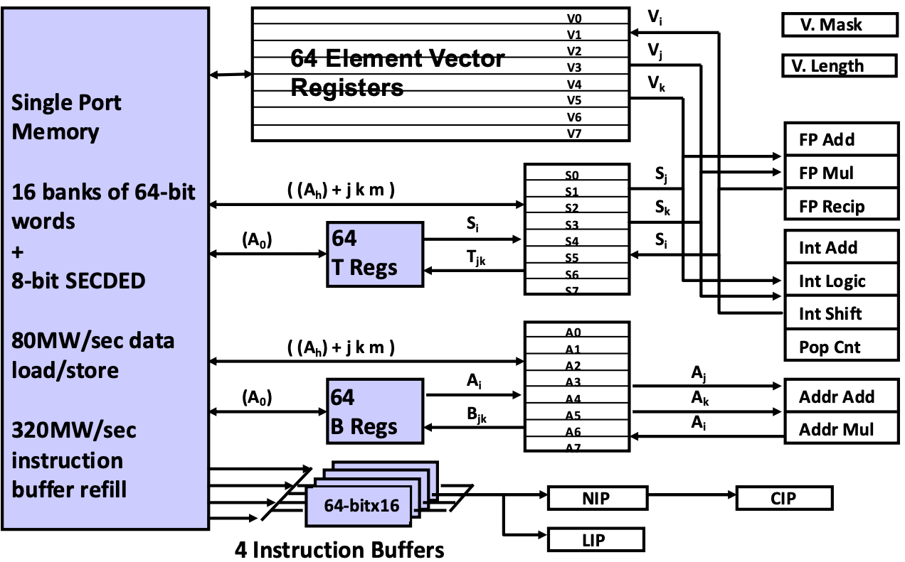
- 위 그림이 SIMD 를 제공하는 아주 고전적인 architecture 인 Cray-1 인데,
- 다 볼 필요는 없고 저기서 위쪽의 vector register 만 보면 된다.
- 보면 64-element vector registers 라고 되어 있는데, 이 말이 하나의 register 에는 64개의 element word 가 vector 로써 들어가고
- 따라서 register 에 있는 데이터가 오른쪽의 ALU 에 들어가게 되는 거다.
- 다만 ALU 에서 한번에 처리하는 개수는 이것보다는 더 작을 수도 있다.
Vector, SIMD
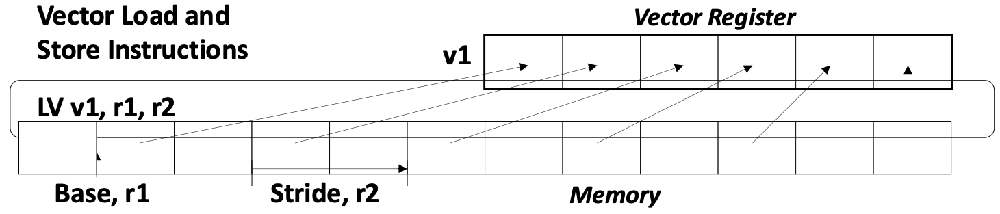
- Vector 랑 SIMD 는 조금의 차이점이 있지만 거의 비슷한 용어이다.
- Vector processor 에서는 위 그림에서 보여지는 것 처럼 연속되지 않은 DRAM 공간의 데이터도 load 할 수 있다는 차이점이 있는데
- 이건 것을 stride access pattern 이라고 한다.
- 근데 SIMD 도 요즘 이런게 가능해서 거의 차이가 없는 용어라고 한다.
- Vector processor 에서는 위 그림에서 보여지는 것 처럼 연속되지 않은 DRAM 공간의 데이터도 load 할 수 있다는 차이점이 있는데
Vector Pipelining
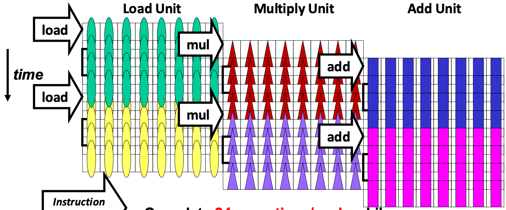
- Vector 에서도 Pipeline 이 가능하다.
- 위 그림은 48개의 element 가 들어가는 register 에 대해 8-lane (즉, 한번에 연산하는 element 의 수) 으로 pipeline 을 하는 것인데,
- 보면 8개를 먼저 load 하고, 그 다음 8개를 load 하는 동안 8개를 multiply 하는 방식으로 pipeline 되는 것.
Matrix Multiplication Example w/ SIMD
- SIMD 를 이용해 행렬곱을 하는 예시를 한번 보자.
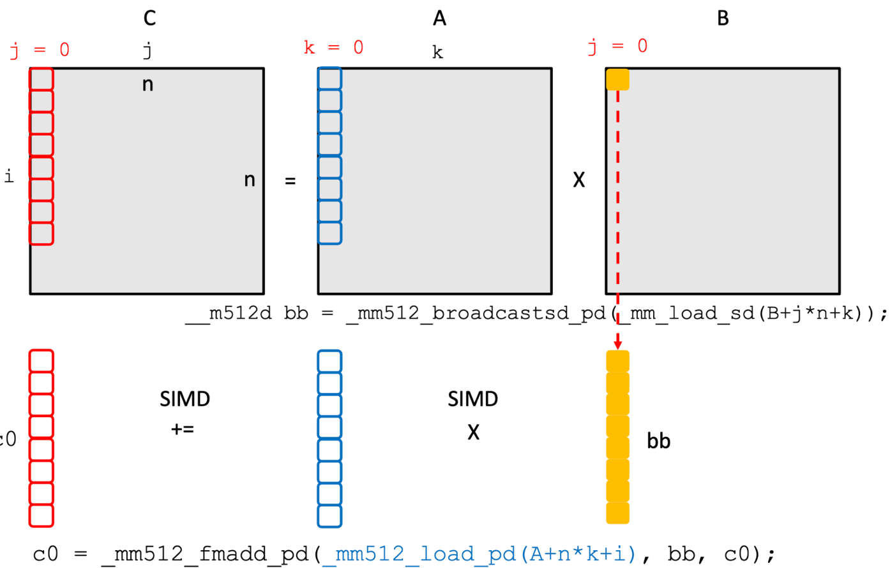
- 우선 위 그림에서 보다시피 output matrix 인 C 에서
j = 0을 얻기 위해서는, A matrix 에서k = 0 ~ K에 해당하는 각각의 column 에 대해 B matrix 에서j = 0에 해당하고k = 0 ~ K에 해당하는 값을 모두 곱해서 더해줘야 한다. - 이것을 SIMD 연산할 때는, C 의 column vector 에다가 A 의
k = 0에 대한 column vector, 그리고 B 의j = 0,k = 0에 해당하는 값을 채운 vector 두개를 곱한 것을 더해주는 연산을 우선 하게 된다.- 여기서 하나의 값을 vector 에 모두 채우는 것은 Broadcast 라고 하고
- 곱한것을 더하는 것은 FMA 연산이다.
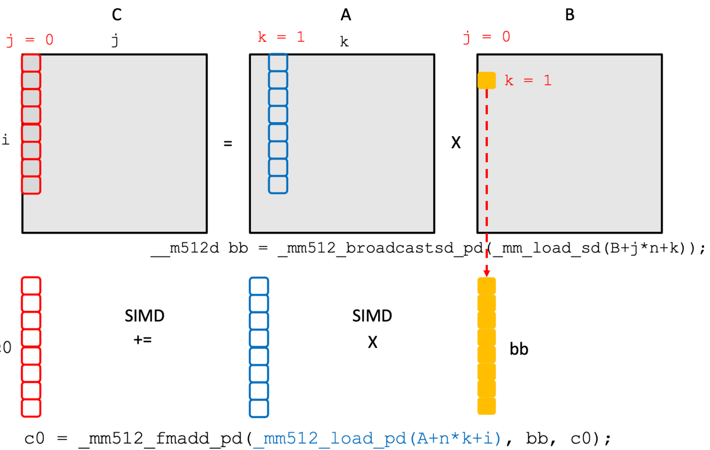
- 다음에는 C 의 column vector 에다가 A 의
k = 1에 대한 column vector, 그리고 B 의j = 0,k = 1에 해당하는 값을 채운 vector 두개를 곱한 것을 누적하여 더해주게 된다. - 그리고 이것을 모든
k에 대해 반복하면 C 에 대한 column vector 가 계산되는 것.
GPU
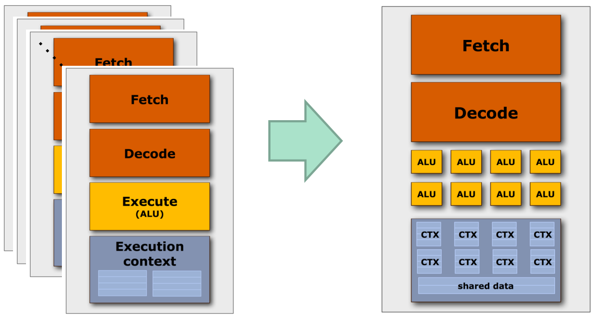
- SIMD (ISA 그냥 이런 processing pattern) 의 경우에는 instruction 이 모두 동일하기 때문에 이 instruction 을 여러군데에서 fetch-decode 하는 것은 매우 비효율적일 것이다.
- 따라서 fetch-decode 는 공유하고 경장히 많은 ALU 들과 여기에서 사용할 ctx reg 들이 묶여있는 것이 GPU 의 기본 형태이다.
CUDA Execution Model
- CUDA 에서 사용하는 execution 과 관련된 용어들을 좀 알아보자.
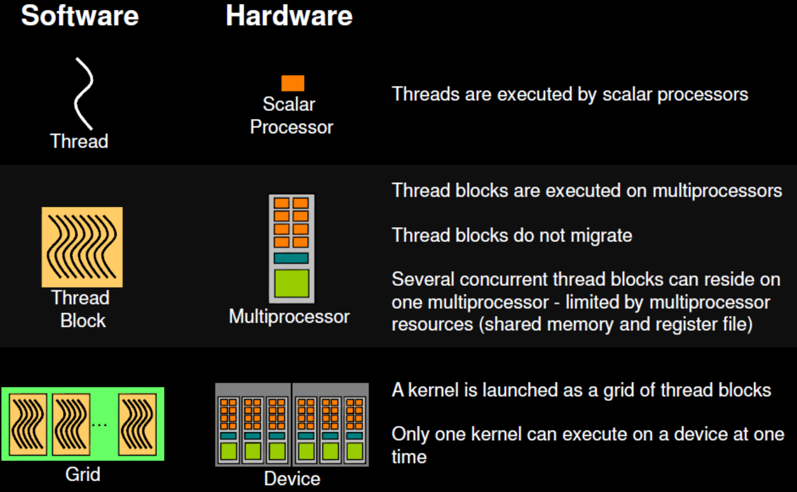
- NVIDIA GPU 에서는 하나의 fetch / decode 로 묶인 ALU 및 context register 들을 Streaming Multiprocessor (SM) 이라고 부른다.
- 그리고 SM 안에서의 각 ALU 는 NVIDIA GPU 에서는 Scalar Processor (SP) 라고 부른다.
- 즉, 하나의 SIMD lane 인 셈
- 그리고 이놈들이 실행될때의 실행흐름을 NVIDIA GPU 에서는 Thread 라고 부른다.
- 하나의 SM 에 “할당” 되는 thread 의 묶음을 NVIDIA GPU 에서는 Thread block 이라고 부른다.
- 그리고 하나의 GPU device 에 할당되는 thread block 들을 Grid 라고 한다.
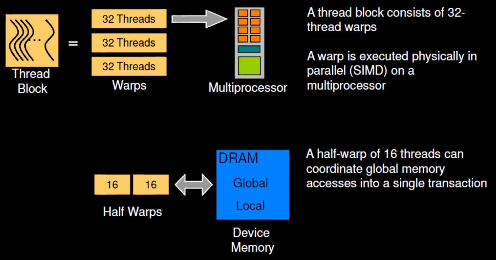
- SM 에 scheduling 되는 단위가 thread block 이고 SM 에서 실제로 한번에 “실행” 되는 단위는 Warp 이다.
- 보통 하나의 warp 는 32개의 thread 로 이루어진다.
CUDA Memory Model
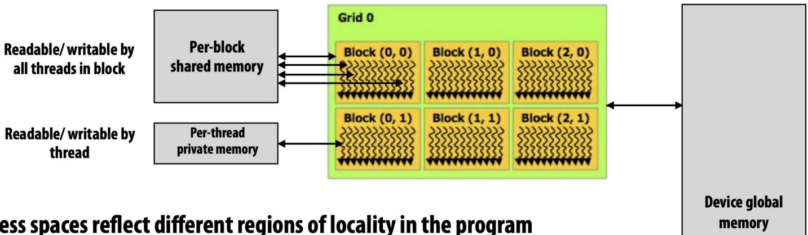
- Mem hierarchy 의 관점으로는
- SP 별로 Context register (Per-thread private memory) 가 있고
- SM 별로는 Local memory (Per-block shared memory) 가 있다.
- 이 local memory 의 사이즈는 GPU 가 다루는 데이터의 사이즈에 비해서는 아주 작고 따라서 GPU 에서는 보통 cache hit ratio 가 아주 낮다고 한다.
- 그리고 GPU 에는 Device global memory 가 있다.
- 여기에 GDDR 혹은 HBM 이 들어간다.
- 그리고 위 그림에서 볼 수 있다시피 얘네들의 접근 범위가 다르다.
- Private memory 는 당연히 하나의 thread 에서밖에 접근 못하고
- Thread block 안에 있는 thread 들은 Local memory 를 공유하고
- Thread block 간의 thread 들에 대해서는 Global memory 를 공유한다.
Control Divergence (Branch)
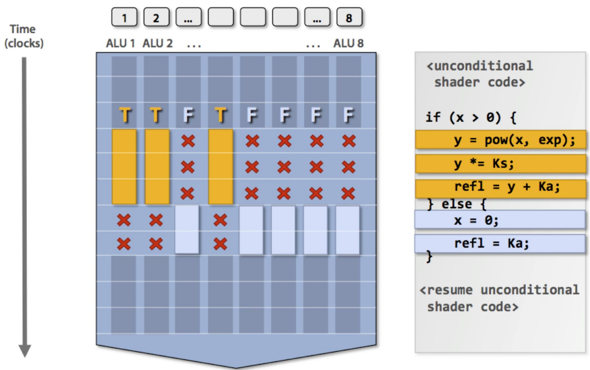
- GPU 에서의 branch 는 SP 의 일부는 true path 를 따라가고, 나머지 일부는 false path 를 따라간 다음 실제 true 인지 false 인지에 따라 해당 path 의 SP exec result 만 남긴다.
- 이것이 GPU 에서 기본적으로 Control divergence (즉, branch) 를 처리하는 방법이다.
- 뭐 이때의 idle cycle 을 최소한으로 하기 위한 여러 논문들이 있지만 그래도 idle cycle 을 아예 회피해버릴 수는 없다고 한다.
Latency Hiding
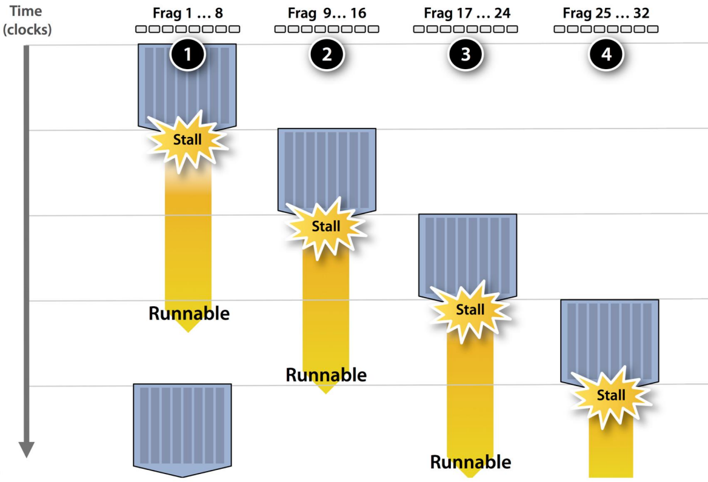
- SM 안에서는 한 warp 가 mem access 에 의해 stall 이 되면 위 그림처럼 다른 warp 가 돌며 Latency hiding 을 하게 된다.
- 즉, communication-computation overlapping 하는 것
- 근데 이러한 방식으로 처리하기 위한 하나의 조건이 있다: 바로 thread 의 수가 충분히 많아야 된다.
- 즉, thread 의 수가 충분히 많아야 한 warp 가 stall 이 되었을 때 thread block 에서 다른 warp 를 꺼내다가 실행할 수 있게 되는 것이다.
- 따라서 GPU programming 을 할 때 가장 기본이 되는 것이 thread 가 최대한 많이 돌아갈 수 있게 하는 것이다.
Matrix Addition Example w/ CUDA
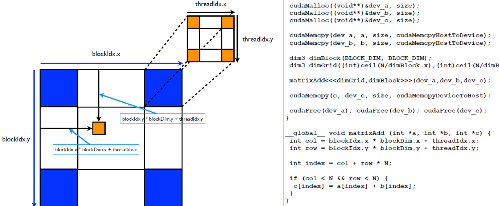
- 뭐 Matrix addition 자체는 그냥 같은 index 에 위치한 데이터를 그냥 더하면 되는 것이라 별로 어려울 게 없고
- Kernel code 를 실행하는 각 thread 에 대해, 본인의 위치를 알아내는 방법에 대해 간단하게 알아보자.
threadIdx.{x|y|z}는 thread block 안에서의 본인 thread 에 대한 index 번호 (x, y, z 축 방향으로) 를 알려주는 변수이다.blockIdx.{x|y|z}는 grid 안에서의 본인 thread 가 속한 thread block 대한 index 번호 (x, y, z 축 방향으로) 를 알려주는 변수이다.blockDim.{x|y|z}thread block 에 대한 (x, y, z 축 방향으로) 크기를 알려주는 변수이다.
- 그래서 다음과 같이 해주면 grid 안에서의 본인 thread 에 대한 index 번호 (x, y, z 축 방향으로) 를 알 수 있다.
blockDim.{x|y|z} * blockIdx.{x|y|z} + threadIdx.{x|y|z}Mapped Memory
- 일반적으로는 GPU memory 에 데이터를 전달해 주기 위해
cudaMalloc하고cudaMemcpy를 쓰는 것이 일반적이다.
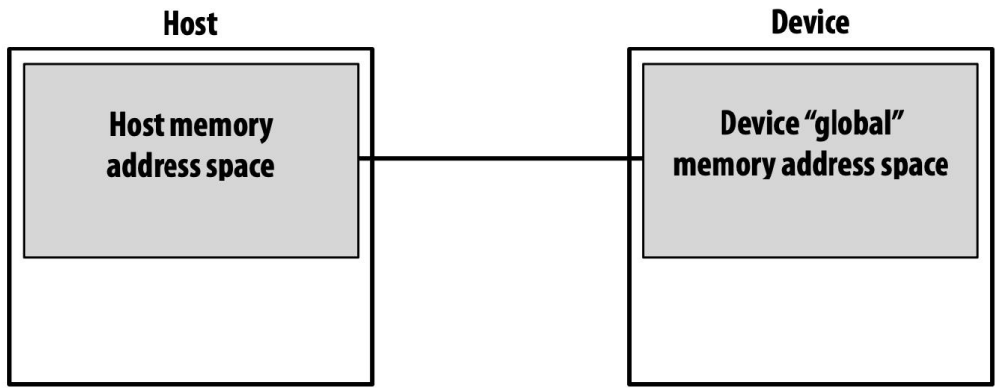
- 근데 요즘은 Virtual Address Space 에 GPU memory 를 붙여서 code 상에는 그냥 일반적인 변수로 접근을 해도 실행할 때는 자동으로 address translation 을 해서 접근하게 하는 방법 (이런것을 Mapped memory 라고 한다) 이나
- CUDA Stream 으로 communicate - compute overlapping 을 하는 방식이 많이 사용된다고 한다.
Matrix Multiplication Example
- 은 choiBLAMS - cuBLAS from Scratch 를 참고하자. 강의에서는 여기에서 Naive approach 정도까지만 설명하고 넘어간다.
Thread Block Scheduling
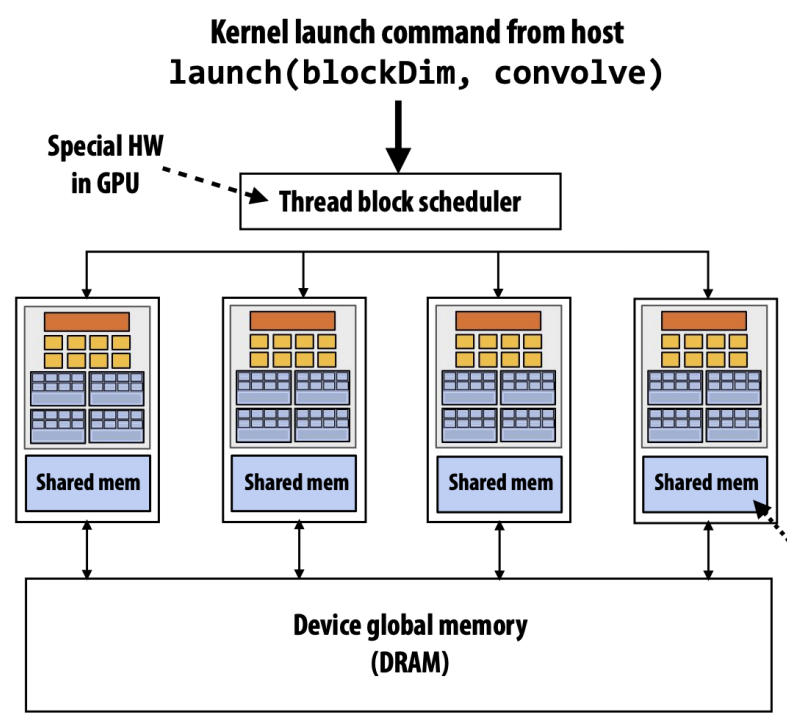
- Code 를 짤 때는, 내가 갖고 있는 GPU 에 몇개의 SM 이 있는지 등을 알 수 없다.
- 물론 검색해보면 알 수는 있다. 근데 이런것을 신경쓰지 않게 하는 것이 abstract 자나?
- 그래서 code 에다가는 Grid 의 크기와 Thread block 의 크기만 알려주면, 그것을 이용해 grid 를 여러개의 thread block 으로 자르고, 각각의 SM 에 할당하는 것은 GPU 내의 Thread block scheduler 가 담당한다.
1D Convolution Example
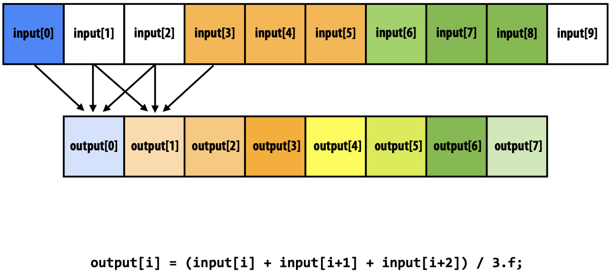
- 1D convolution 은
input[i]부터 W (Window size) 개의 input 들을 aggregate 하여output[i]을 계산하는 방법이다.- 위의 예시는 window size 3 으로 하여 average 를 하는 1D convolution 이다.
- 이것을 위한 naive version kernel 은 다음과 같다:
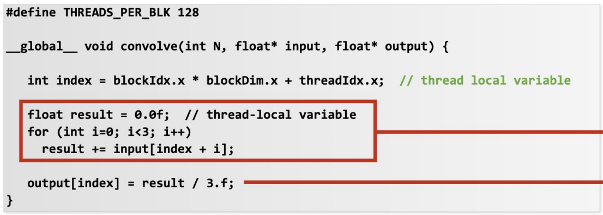
- 보면 일단 간단하기는 한데, 이 코드는 당연히 느리다.
- 왜냐면 각 thread 가 global memory 인
input[]에 세번 접근하기 때문.
- 왜냐면 각 thread 가 global memory 인
- 근데
i번째 thread 가output[i]를 계산하기 위해input[i],input[i+1],input[i+2]에 접근하고i+1번째 thread 는output[i+1]를 계산하기 위해input[i+1],input[i+2],input[i+3]에 접근한다는 것을 생각해 보면- Thread 들이 동일한 데이터에 접근하는데 매번 global memory 에 접근하고 있다는 것을 알 수 있다.
- 따라서 이것을 방지하기 위해 thread block 이 사용할 데이터를 shared memory 에 일단 다 올려놓고, 여기에 반복적으로 접근하면 훨씬 더 빠르겠다는 생각을 한다.
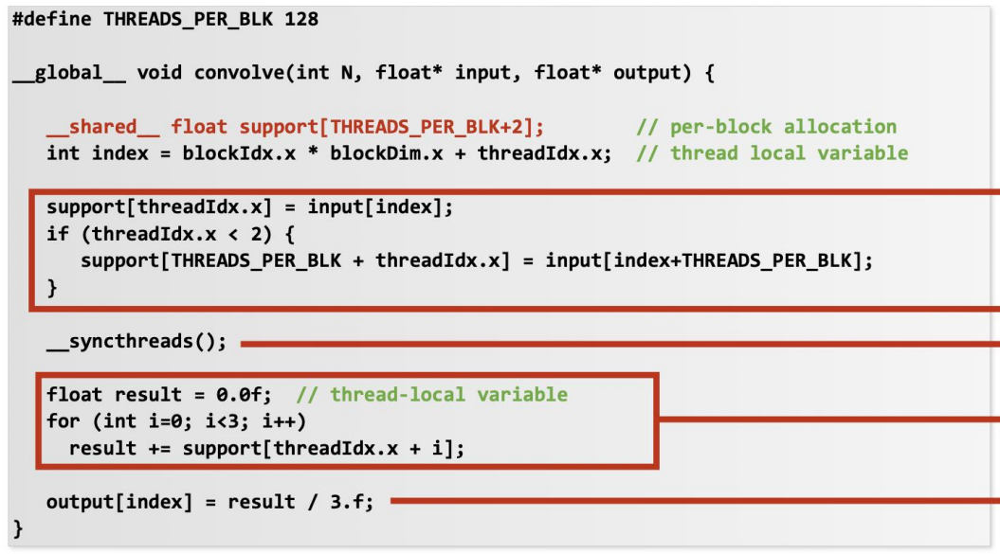
- 그래서 위의 코드에서는
__shared__로 정의된 변수에- 우선 input array element 를 하나씩 load 하고
__syncthreads()로 모든 thread 들이 다 load 할 때까지 기다린 다음에- 마지막에 naive code 에서처럼 연산해 주게 된다.
- 이렇게 되면
3 * NUM_THREADS만큼 global memory 에 접근해야 했던 것이,NUM_THREADS만큼 접근하게 되면서 훨씬 빨라지게 된다.